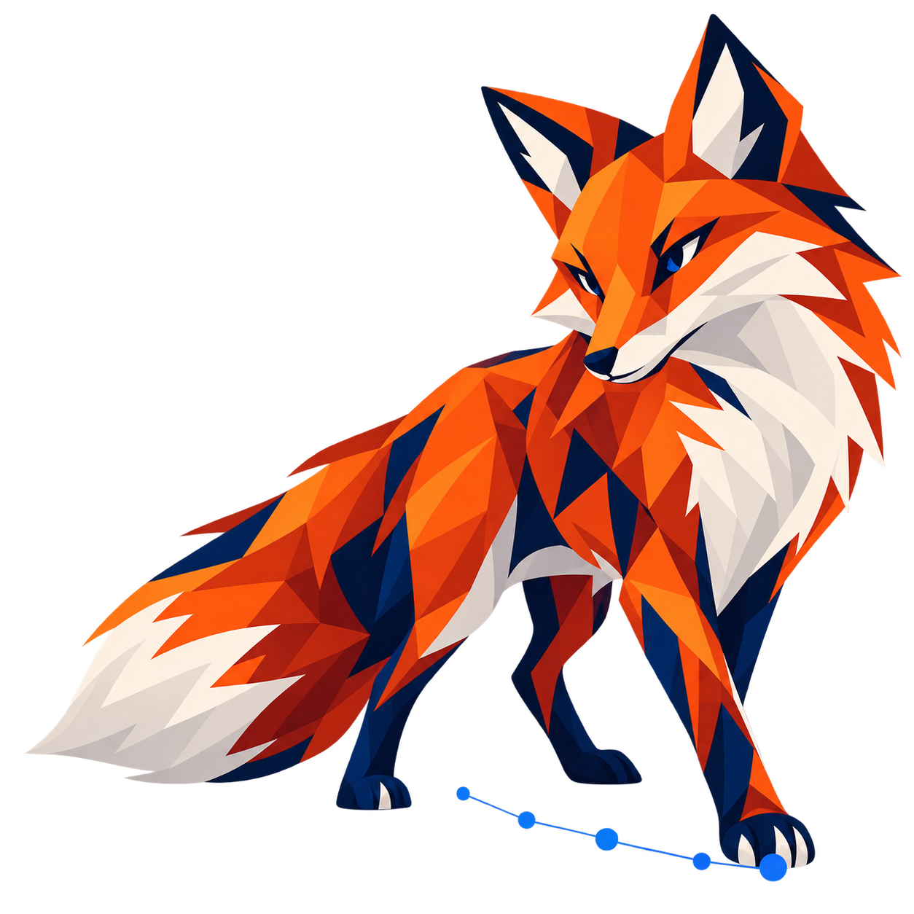

Understanding by Design
Desired results, acceptable evidence, then the learning experience. That's the organizing logic I return to when a lesson feels busy but its purpose isn't clear.
I'm a mathematician, educator, and curriculum leader. I enjoy taking research about how people learn and turning it into lessons, tools, and systems that make sense to instructors and students alike.
My work brings together K-12 mathematics, national AI education, curriculum development, team leadership, and practical AI research. I'm especially interested in what it takes to deliver a consistently strong learning experience at scale.
Dr. Jonathan D. Doane · Ph.D., Mathematical Sciences · Curriculum & instructional leadership
Research gives me a way to make decisions, not just a collection of names to cite. Here's how I organize the theories and frameworks I draw from when thinking about curriculum, instruction, and assessment.

| Area of practice | Researchers & frameworks | How it informs my curriculum work |
|---|---|---|
| 01 / IntentBackward design & cognitive demand | Wiggins & McTighe (Understanding by Design), Bloom (and the revised taxonomy), Webb (Depth of Knowledge) | Start with what learners should understand and do. Align essential questions, standards, learning activities and assessment. Look at the thinking a task actually requires, not just the verb used in the prompt. |
| 02 / InquiryConstructivism & active learning | Dewey (experience), Piaget (cognitive development), Bruner (discovery and scaffolding), Bybee (5E instructional model) | Give students worthwhile problems, time to explore, explanations they can test, and opportunities to apply what they have learned. The 5E model is particularly useful for designing an inquiry sequence. |
| 03 / CommunitySocial learning & instructional support | Vygotsky (zone of proximal development), Bandura (social learning), Garrison, Anderson & Archer (Community of Inquiry) | Use instructor guidance, worked collaboration, discussion and timely feedback. Build the kind of learning community in which students feel comfortable taking intellectual risks. |
| 04 / ClarityExplicit instruction & cognitive load | Rosenshine (Principles of Instruction), Sweller (Cognitive Load Theory), Gagné (Nine Events of Instruction) | Sequence complexity carefully, use worked examples when they help, and remove avoidable confusion. Balance clear explanations with opportunities for independent thinking. |
| 05 / EvidenceFormative assessment & feedback | Black & Wiliam (assessment for learning), Hattie (visible learning and feedback), Marzano (instructional strategies and classroom practice) | Build checks for understanding into the learning, not just the end of it. Make feedback useful to instructors and students, and review what assessment patterns tell us about a lesson. |
| 06 / AccessInclusive & differentiated learning | CAST (Universal Design for Learning), Tomlinson (differentiation), Ladson-Billings (culturally relevant pedagogy) | Plan for different starting points, representations and means of participation. Keep the learning goal rigorous while reducing barriers that are not part of the skill being taught. |
| 07 / MotivationEngagement, reinforcement & agency | Skinner (behavioral reinforcement), Deci & Ryan (Self-Determination Theory), Dweck (mindset research) | Be intentional about recognition, relationships and student ownership. My classroom participation work, in particular, made me pay close attention to whose voices are being heard and what helps more students participate. |
Desired results, acceptable evidence, then the learning experience. That's the organizing logic I return to when a lesson feels busy but its purpose isn't clear.
Engage, Explore, Explain, Elaborate, Evaluate. This supports the shift from passively watching or listening to actively working with ideas.
Accessible materials, thoughtful scaffolds and meaningful choices matter from the beginning of design, not just at final review.
I've worked with New York mathematics standards as a classroom teacher and with nationwide K-12 mathematics content at Huntington Learning Center. Those experiences taught me that consistency is not the same thing as giving every state an identical course. You need a repeatable way to document and manage the differences.
Confirm the state, subject, grade, course and current version.
Record the skill, prerequisite knowledge and expected depth.
Align practice and assessment with the actual learning requirement.
Preserve state-specific wording, sequences and requirements.
Track ownership, sources, decisions and revisions.
Illustrative official mathematics frameworks to check when designing a multi-state content system. This is a reference table, not a claim that I personally authored a crosswalk for each of these states.
| State | Framework | What the team needs to verify |
|---|---|---|
| New York | Next Generation Mathematics Learning Standards ↗ | Grade-level expectations, course sequence, assessment alignment and current NYSED implementation guidance. |
| Texas | Texas Essential Knowledge and Skills (TEKS) ↗ | Course-specific TEKS, required content, state terminology and standards amendments. |
| California | California Common Core State Standards: Mathematics ↗ | CA standards, standards for mathematical practice, course-level organization and state guidance. |
| Florida | B.E.S.T. Standards for Mathematics ↗ | Current benchmarks, mathematical thinking and reasoning standards, and revisions to state rules. |
| Virginia | Mathematics Standards of Learning ↗ | Grade and course expectations, instructional resources, and the adopted version in use. |
Some of my most useful work has been behind the scenes: educational frameworks, authoring expectations, a curriculum dictionary, technical terminology checks, and tools that make decisions easier for instructional teams.
In the curriculum work I've led, that means clear objectives, purposeful vocabulary, content accuracy, appropriate cognitive demand, accessibility, assessment alignment, and review that can actually be completed on schedule.
I like a quality review that answers practical questions: What is the learner doing? Does the assessment match the objective? Can another instructor use the material without having to guess what the author intended?
Teachers and subject specialists should have room for judgment. At the same time, a common framework needs enough consistency that students receive the intended learning experience, whether they're learning from one instructor, another instructor, or a video-based course.
That takes good templates, useful examples, clear decision rights, feedback, and a way to track changes when the curriculum evolves.
Common terminology reduces inconsistencies, unnecessary explanation and revision work across curriculum authors and production teams.
Rubrics, exemplars and review conversations make subjective expectations easier to discuss, apply and improve.
Use instructor experience, learner questions, assessment performance and quality issues to decide what to improve next.
I enjoy building tools, but I care just as much about whether they're useful, whether they can be evaluated, and whether they preserve the judgment of educators and program staff.
I studied how an LLM's scores compare with trained human ratings across individual rubric criteria. The work includes human-alignment calibration, disagreement analysis and a route for expert review. The goal is to make evaluation more consistent and useful, not to replace instructor judgment with a black box.
Public summary only. Detailed internal evaluation materials are not included.A searchable research structure for 188 AI/ML student projects: techniques used, application sectors, datasets, technical sophistication, and project relationships. The work includes evidence checks, research methodology, and privacy safeguards.
I evaluated whether historical application data and written responses might help staff prioritize applications for human review. The study included held-out evaluation and equity checks, alongside clear limitations about model reproduction and generalization.
At EdLight, I reviewed over 1,000 handwritten math work samples to study misconception patterns for teacher-facing feedback. In my own classroom, I also developed and presented a participation-tracking approach focused on recognition, relationships and giving more students a reason to contribute.
Applied research, instructional tools and teacher development.At AI4ALL, I've recruited, coached and managed a nationally distributed instructional team, worked with curriculum developers and project leads, and partnered with people across education, product, engineering, data and leadership. I value clear expectations, real ownership and treating the subject experts as experts.
One useful shorthand for the culture I try to create is CARE:
Know what we're trying to accomplish and follow through.
Remove barriers and make sure people have the support they need.
Listen carefully, welcome expertise and address problems directly.
Give people meaningful responsibility and room to grow.
An explicit pedagogical framework, clear review norms, measurable quality standards, and systems that make cross-team coordination easier. I enjoy taking a big strategy and turning it into work people can actually execute.
Whether the challenge is a curriculum overhaul, stronger authoring practices, responsible AI integration, or bringing different subject teams together around a common vision, that's work I enjoy.